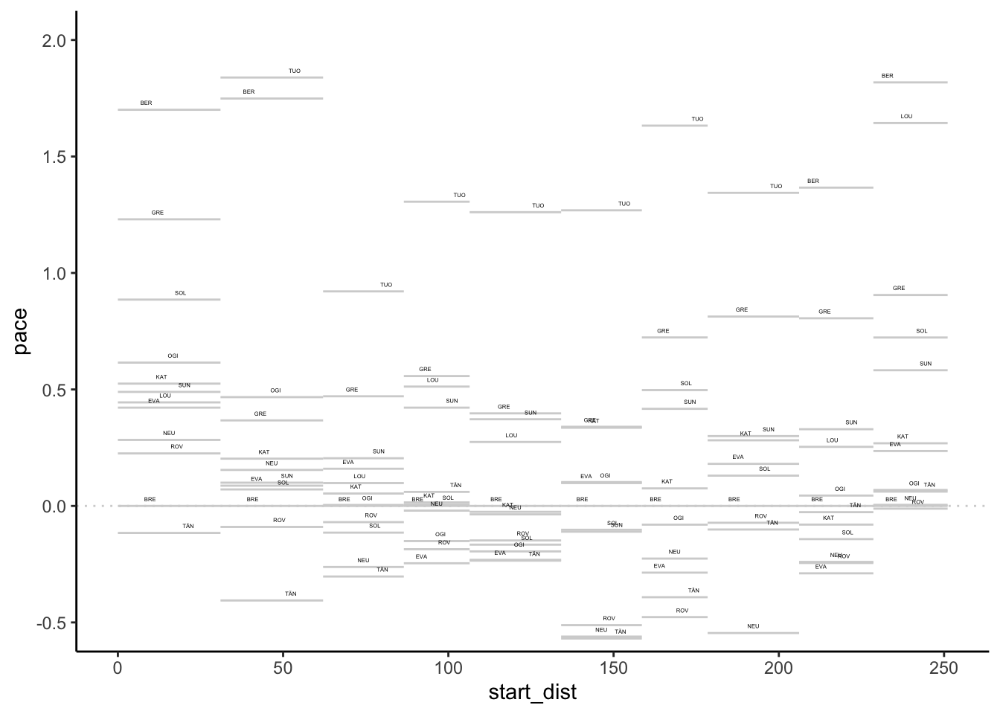
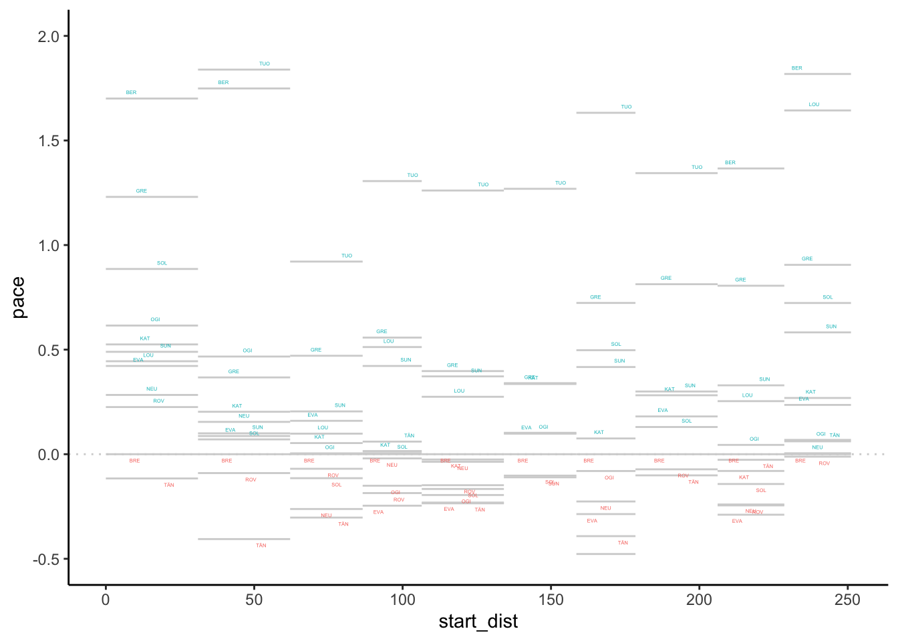
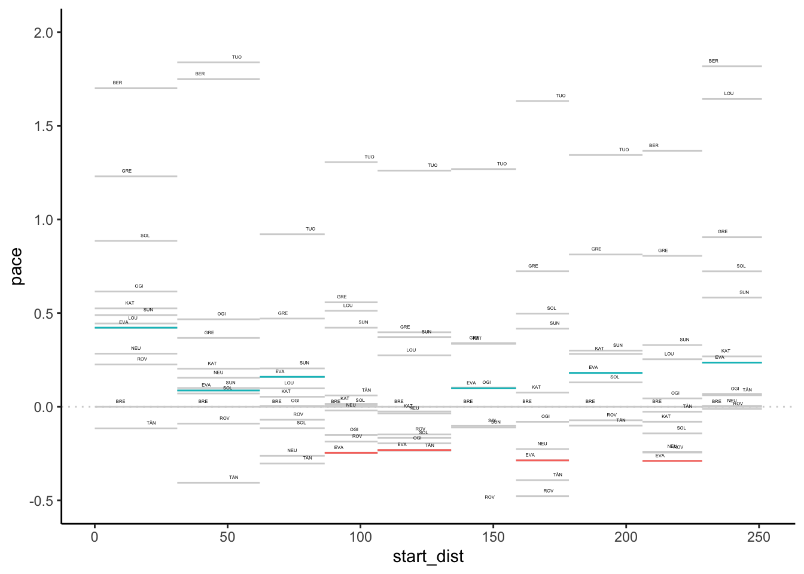
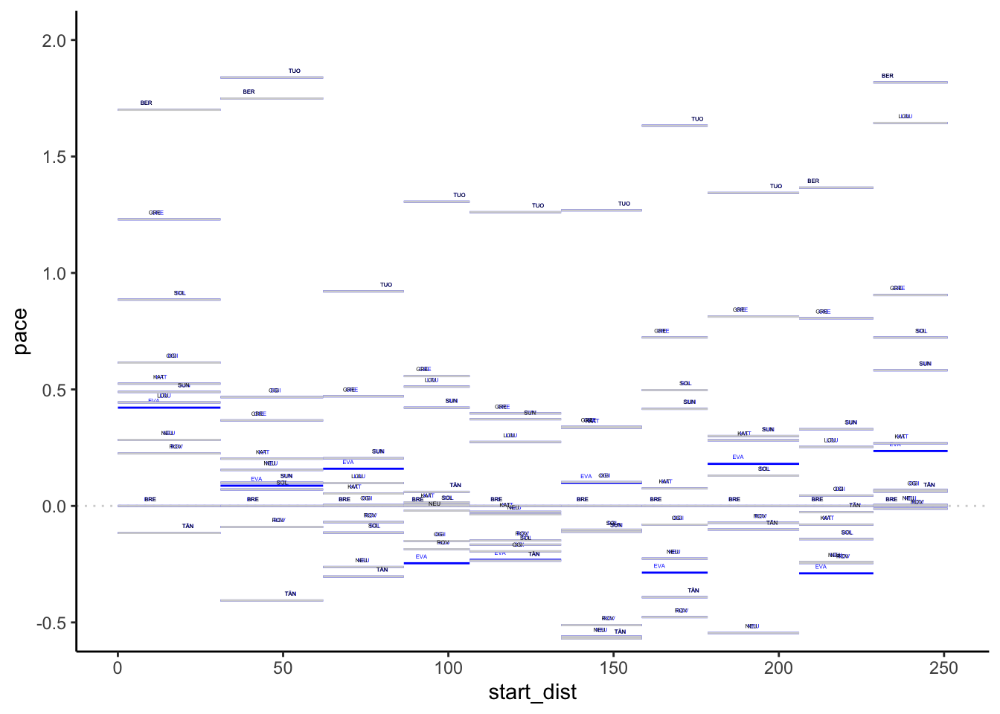
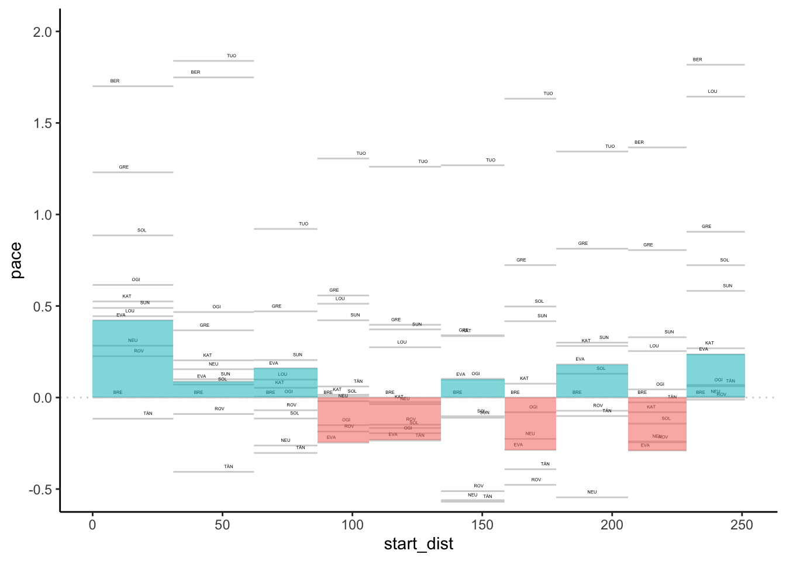
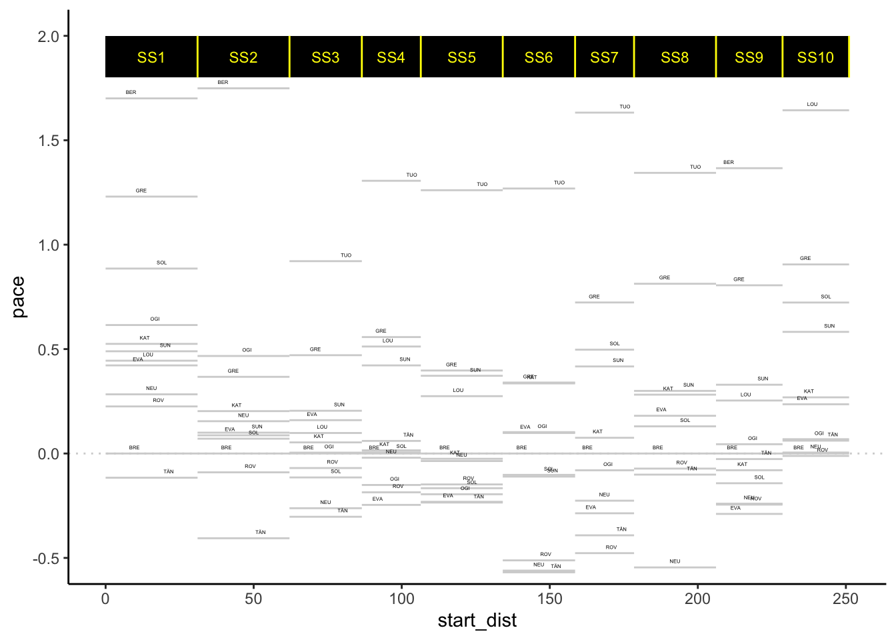

4 Finding Pace Across Stages
As well as visualising stage results purely in terms of time and position differences, we can also use stage time data and stage distances as a basis for some simple stage pace calculations.
4.1 Load Base Data
To get the splits data from a standing start, we can load in the current season list, select the rally we want, look up the itinerary from the rally, extract the sections and then the stages and the retrieve the stage ID for the stage we are interested in.
Load in the helper functions:
source('code/wrc-api.R')And get the data:
s = get_active_season()
eventId = get_eventId_from_name(s, 'arctic')
itinerary = get_itinerary(eventId)
sections = get_sections(itinerary)
stages = get_stages(sections)
stages_lookup = get_stages_lookup(stages)
# Driver details
cars = get_car_data(entries)Get a sample stage ID:
stageId = stages_lookup[['SS3']]4.2 Defining Pace
With variable stage distances on a stage rally, metrics such as average speed provide one way of comparing performances across stage, calculated as \(\textrm{stage_time}/\textrm{stage_distance}\) with units of kilometers or miles per hour.
A more useful measure, particularly in rally terms, is the notion of pace, typically given with units of seconds per kilometer. Speed tells us much quickly a car covers distance in unit time; pace gives us an indication of how much time is required to travel a unit distance.
When used as a rebased difference measure between drivers, pace difference allows us to rapidly calculate how much time a driver is likely to gain or lose over a particular stage distance as per the word equation \(\textrm{time_gain}=\textrm{stage_distance}\cdot\textrm{pace_difference}\).
Basic pace itself is given as \(\textrm{pace}=\textrm{time}/\textrm{distance}\).
4.3 Calculating Stage Pace
We can calculate stage pace from stage times and stage distances.
We can find stages distances directly from the stages dataframe:
stages %>% select(c('code','distance')) %>% head(3)## code distance
## 1 SS1 31.05
## 2 SS2 31.05
## 3 SS3 24.434.3.1 Calculating Pace for a Single Stage
Let’s start by looking a single stage using a recipe we have used before:
# Example stage code
stage_code = 'SS3'
stageId = stages_lookup[[stage_code]]
# Get the stage distance
stage_distance = stages[stages['code']==stage_code, 'distance']
# Get driver metadata
cars = get_car_data(entries)
# Create stage times with merged in driver metadata
stage_times = get_stage_times(eventId, stageId) %>%
arrange(position) %>%
head(10) %>%
# Merge in the entries data
merge(cars, by='entryId') %>%
# Convert milliseconds to seconds
mutate(TimeInS = elapsedDurationMs/1000) %>%
# Limit columns and set column order
select(c('position', 'identifier',
'code', 'TimeInS')) %>%
# The merge may upset the row order
# so reset the order again
arrange(position) %>%
# Improve column names by renaming them
rename(Pos=position,
Car = identifier,
Code = code,
`Time (s)` = TimeInS)
formattable(stage_times )| Pos | Car | Code | Time (s) |
|---|---|---|---|
| 1 | 8 | TÄN | 834.5 |
| 2 | 11 | NEU | 835.5 |
| 3 | 2 | SOL | 839.1 |
| 4 | 69 | ROV | 840.2 |
| 5 | 42 | BRE | 841.9 |
| 6 | 1 | OGI | 842.0 |
| 7 | 18 | KAT | 843.2 |
| 8 | 7 | LOU | 844.3 |
| 9 | 33 | EVA | 845.8 |
| 10 | 3 | SUN | 846.9 |
We can now calculate pace as the stage time divided by the stage distance:
stage_times$pace = stage_times$'Time (s)' / stage_distance
stage_times## Pos Car Code Time (s) pace
## 1 1 8 TÄN 834.5 34.15882
## 2 2 11 NEU 835.5 34.19975
## 3 3 2 SOL 839.1 34.34711
## 4 4 69 ROV 840.2 34.39214
## 5 5 42 BRE 841.9 34.46173
## 6 6 1 OGI 842.0 34.46582
## 7 7 18 KAT 843.2 34.51494
## 8 8 7 LOU 844.3 34.55997
## 9 9 33 EVA 845.8 34.62137
## 10 10 3 SUN 846.9 34.666394.3.2 Calculating Pace for Multiple Stages
First, let’s get the data for all the stages:
stage_list = get_stage_list(stages)
multi_stage_times = get_multi_stage_times(stage_list)
multi_stage_times %>% tail(2)## stageTimeId stageId entryId elapsedDurationMs elapsedDuration status
## 539 96810 1749 21571 1301693 00:21:41.6930000 Completed
## 540 96793 1749 21541 NA <NA> DNS
## source position diffFirstMs diffFirst diffPrevMs diffPrev
## 539 Default 52 699224 00:11:39.2240000 153590 00:02:33.5900000
## 540 Default NA NA <NA> NA <NA>We can generate the pace by adding the stage distance as an extra column and performing the pace calculation.
We’ll also take the opportunity to merge in driver metadata and limit cars to WRC group entries:
multi_stage_pace = multi_stage_times %>%
merge(stages[,c('stageId' ,'distance',
'number', 'code')],
by='stageId') %>%
mutate(elapsedDurationS = elapsedDurationMs / 1000,
pace = elapsedDurationS / distance) %>%
merge(cars[,c('entryId','drivername',
'code', 'groupname')],
by='entryId',
suffixes=c('','_driver')) %>%
filter(groupname=='WRC') %>%
select(c('stageId', 'number', 'code_driver',
'elapsedDurationS', 'pace', 'code')) %>%
arrange(number, elapsedDurationS)
multi_stage_pace %>% head(3)## stageId number code_driver elapsedDurationS pace code
## 1 1747 1 TÄN 957.8 30.84702 SS1
## 2 1747 1 BRE 961.4 30.96296 SS1
## 3 1747 1 ROV 968.4 31.18841 SS1Create a mapping from stage ID to stage codes and cast the ordered list of stage Ids to an ordered list of stage codes:
# Create a stage code mapping function
stages_lookup_code = get_stages_lookup(stages, 'stageId', 'code')
stage_code_map = function(stageId)
stages_lookup_code[[as.character(stageId)]]
# Map stage ID column names to stage codes
stage_codes = unlist(purrr::map(stage_list,
function (x) stage_code_map(x)))
stage_codes## [1] "SS1" "SS2" "SS3" "SS4" "SS5" "SS6" "SS7" "SS8" "SS9" "SS10"Use the generic widener function to widen the pace dataframe to give the pace for each driver on each stage:
pace_wide = get_multi_stage_generic_wide(multi_stage_pace,
stage_codes, 'pace',
# Unique group keys required
# Driver code not guaranteed unique
group_key=c('code_driver'),
spread_key='code')
pace_wide %>% head(3)## # A tibble: 3 x 11
## # Groups: code_driver [3]
## code_driver SS1 SS2 SS3 SS4 SS5 SS6 SS7 SS8 SS9 SS10
## <chr> <dbl> <dbl> <dbl> <dbl> <dbl> <dbl> <dbl> <dbl> <dbl> <dbl>
## 1 BER 32.7 32.8 58.7 57.6 48.8 58.8 57.7 49.3 28.7 28.6
## 2 BRE 31.0 31.1 34.5 27.7 27.3 34.8 28.0 28.1 27.3 26.8
## 3 EVA 31.4 31.2 34.6 27.5 27.1 34.9 27.8 28.3 27.0 27.14.4 Rebasing Stage Pace
We can rebase the stage pace according to a specific driver:
example_driver = pace_wide[2,]$code_driver
pace_wide_rebased = rebase(pace_wide, example_driver, stage_codes,
id_col='code_driver')
pace_wide_rebased %>% head(3)## # A tibble: 3 x 11
## # Groups: code_driver [3]
## code_driver SS1 SS2 SS3 SS4 SS5 SS6 SS7 SS8 SS9
## <chr> <dbl> <dbl> <dbl> <dbl> <dbl> <dbl> <dbl> <dbl> <dbl>
## 1 BER 1.70 1.75 24.3 29.9 21.4 24.0 29.7 21.1 1.37
## 2 BRE 0 0 0 0 0 0 0 0 0
## 3 EVA 0.422 0.0870 0.160 -0.246 -0.231 0.0982 -0.286 0.181 -0.289
## # … with 1 more variable: SS10 <dbl>4.5 Visualising Stage Pace
To compare pace, it is useful to look at rebased pace times relative to a particular driver and also indicate the length of stage with which particular pace levels are associated.
We can do this with a chart that presents distance into stage along the horizontal x-axis and relative pace on the y axis, using a line to indicate the pace for each driver relative to a specified driver.
One of the easiest way of plotting charts is to plot from a tidy dataframe, so let’s cast the rebased wide pace dataframe back to a long form and also add in the distance into stage at the start and end of each stage:
library(tidyr)
stage_range = c(start=stage_codes[1],
end=stage_codes[length(stage_codes)])
stages$cum_dist = cumsum(stages$distance)
stages$start_dist = c(0, stages$cum_dist[-length(stages$cum_dist)])
pace_long = pace_wide_rebased %>%
gather(code, pace,
stage_range['start']:stage_range['end']) %>%
merge(stages[,c('code', 'start_dist', 'cum_dist')],
by='code')
pace_long %>% head(3)## code code_driver pace start_dist cum_dist
## 1 SS1 BER 1.7004831 0 31.05
## 2 SS1 BRE 0.0000000 0 31.05
## 3 SS1 EVA 0.4219002 0 31.05We can now construct a chart using line segments to represent the pace for each driver on each stage:
library(ggplot2)
g0 = ggplot(pace_long, aes(group=code_driver)) +
geom_hline(yintercept = 0,
colour='lightgrey', linetype='dotted') +
geom_segment(aes(x=start_dist, xend=cum_dist,
y=pace, yend=pace),
color = 'lightgrey')
g = g0 + geom_text(aes(x=(start_dist+cum_dist)/2,y=pace+0.03,
label=code_driver,group=code_driver),
position = position_dodge(15), size=1) +
ylim(-0.5,2) + theme_classic()
g
We could highlight positive and negative differences in the label colourings:
g0 + geom_text(aes(x=(start_dist+cum_dist)/2,
y=ifelse(pace>0,pace+0.03,pace-0.03),
label=code_driver,group=code_driver,
color=pace>0),
position = position_dodge(15), size=1) +
ylim(-0.5,2) + theme_classic() + theme(legend.position="none")
We can also highlight values for a particular driver:
g + geom_segment(data=pace_long[pace_long$code_driver=='EVA',],
aes(x=start_dist, xend=cum_dist,
y=pace, yend=pace, color = pace>0)) +
theme(legend.position="none")
Or abuse the gghiglight package to modify the aesthetics of unselected items:
g + gghighlight::gghighlight(code_driver=='EVA',
unhighlighted_params=list(alpha=0.1)) Alternatively, abuse
Alternatively, abuse gghighlight() again with a negative form of selection to highlight items:
g + gghighlight::gghighlight(code_driver!='EVA',label_key=code_driver,
unhighlighted_params=list(color='blue'))
We could even add a transparency layer bar to highlight the pace difference compared to a particular driver:
g + geom_rect(data=pace_long[pace_long$code_driver=='EVA',],
aes(xmin=start_dist, xmax=cum_dist,
ymin = ifelse(pace>0,0,pace),
ymax = ifelse(pace>0,pace,0),
fill = pace>0, alpha=0.7)) +
theme(legend.position="none")
To highlight stages, we could add a “banner” to the chart:
g + geom_rect(data=pace_long[pace_long$code_driver==example_driver,],
aes(xmin=0, xmax=max(cum_dist),
ymin = 1.8, ymax = 2.0,
alpha=0), fill = 'black') +
geom_text(data=pace_long[pace_long$code_driver==example_driver,],
aes(label=code, y=1.9, x=(cum_dist + start_dist)/2),
color='yellow', size=3) +
geom_segment(data=pace_long[pace_long$code_driver==example_driver,],
aes(x=cum_dist, xend=cum_dist,
y=1.8, yend=2.0), color='yellow') +
theme(legend.position="none")